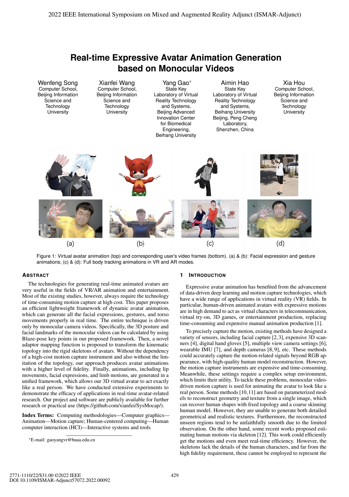
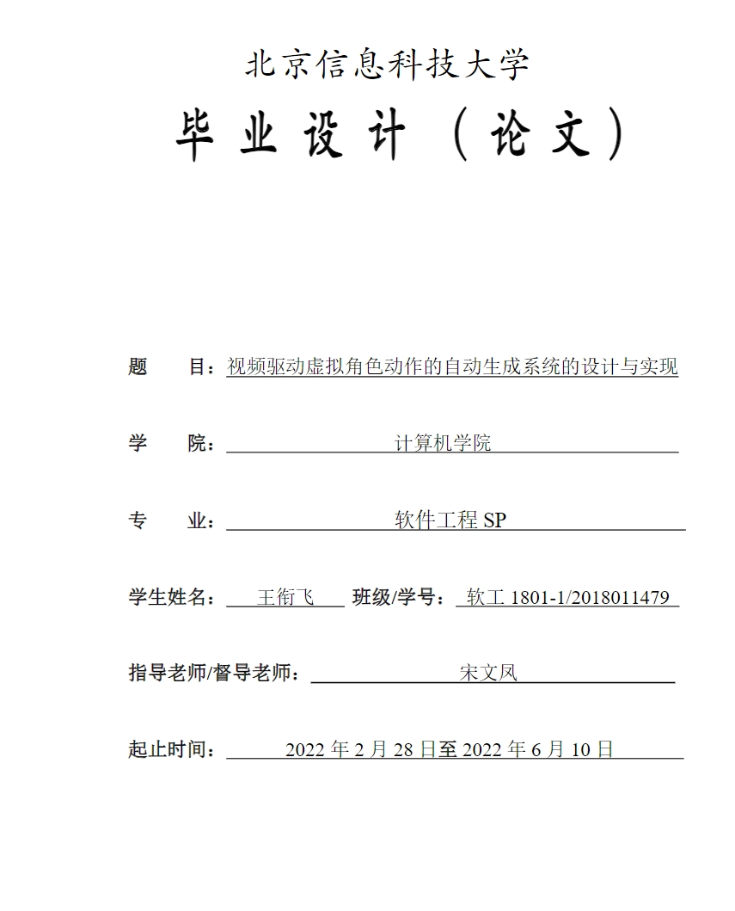

{{language.tabModelLib.userModel}}
{{language.tabModelLib.dragModel}}
{{language.tabModelLib.suppotFormat}} {{language.tabModelLib.here}}
{{language.tabModelLib.dragImage}}
{{model.name}}
{{model.type.toUpperCase()}}
{{language.tabModelLib.buildinModel}}
{{model.name}}
{{model.type.toUpperCase()}}
{{model.name}}
{{model.type.toUpperCase()}}
{{language.tabMocap.chooseModel}}
{{language.tabMocap.dataSource}}
{{language.tabMocap.choosedVideo +
(videoPath==''?language.tabMocap.unchoosed:videoPath)}}
{{language.app.name}}
v{{appVersion}}
v{{process.versions.electron}}
v{{process.versions.node}}
{{updateError}}
Update Available: {{hasUpdate?.name}}
{{language.tabSettings.ui.name}}
{{language.tabSettings.ui.themeColor}}
language
{{language.tabSettings.ui.language}}
{{language.tabSettings.input.name}}
{{language.tabMocap.chooseCamera}}
{{language.tabSettings.preview.name}}
{{language.tabSettings.forward.name}}
{{language.tabSettings.forward.port}}
{{settings.forward.port}}
{{language.tabSettings.performance.name}}
{{language.tabSettings.output.name}}
{{language.tabSettings.output.usePicInsteadOfColor}}
{{language.tabSettings.mediapipe.name}}Powered by MediaPipe BlazePose GHUM 3D CNN Model
MODEL_COMPLEXITY
info_outline
MIN_DETECTION_CONFIDENCE
info_outline
MIN_TRACKING_CONFIDENCE
info_outline
{{language.tabSettings.about.name}}
{{language.tabSettings.about.paper}}

Animation Generation...
ISMAR 2022
Real-time Expressive Avatar Animation Generation...

生成系统的设计与实现
本科毕业论文（Chinese Only）
视频驱动虚拟角色动作的自动生成系统的设计与实现
{{language.tabSettings.dev.name}}
open_in_new
{{language.tabSettings.dev.showGpuInfo}}